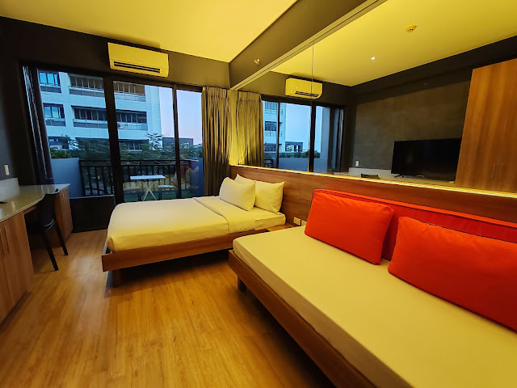
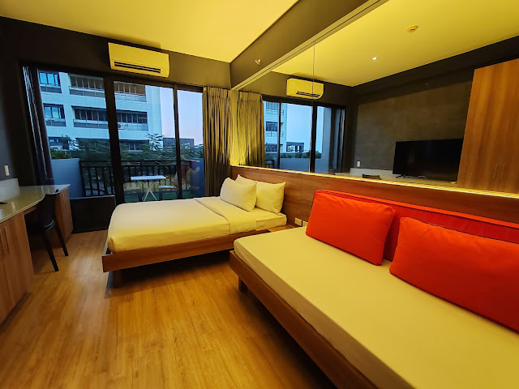
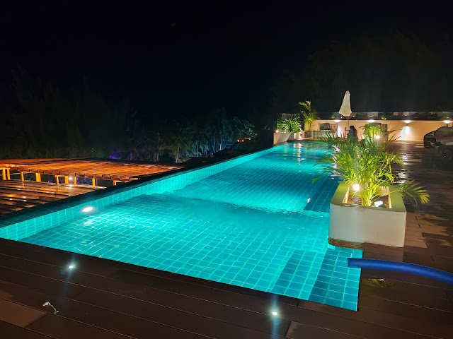
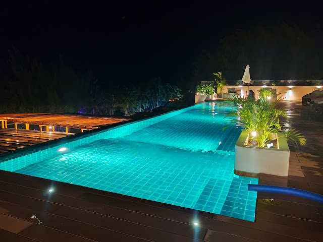
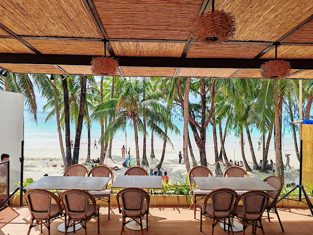
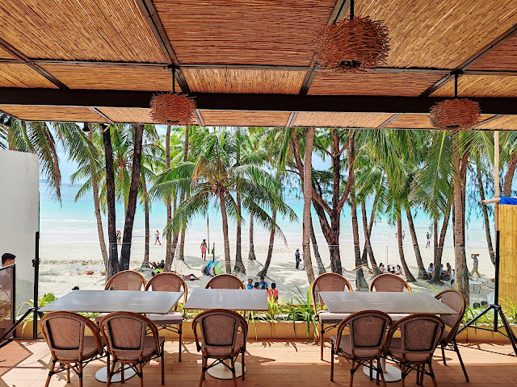

Are you yearning for a picturesque getaway in the heart of Alabang, Muntinlupa? Allow me to share my staycation experience at Azumi Boutique Hotel. With its captivating infinity pool boasting city views and cozy rooms suitable for solo adventurers, couples, or family getaways, this lovely property promises an unforgettable stay. Join me on a journey through this relaxing escape and explore the delightful features that make it a must-visit destination.

Nestled in the vibrant heart of Muntinlupa, Azumi Boutique Hotel beckons solo adventurers, couples, and families alike with its warm and inviting ambiance. Picture yourself in their air-conditioned rooms, each offering a spectacular view of towering skyscrapers that paint the city skyline.
 

During my recent visit before my Baguio escapade, I relished the pleasure of staying in their meticulously designed rooms. From a queen-size bed to a plush sofa, a flat-screen TV with Netflix, a refrigerator, microwave, and coffee-making facilities – every detail exuded comfort. The room's hot and cold showers, complemented by complimentary toiletries, ensured a refreshing experience, leading to a night of undisturbed sleep.
Starting at an enticing rate of P2733, indulge in an overnight stay for two in their Queen room. Explore various room options, from the King Room to the Penthouse Room, all featuring kitchenettes and some boasting extended balconies. Azumi Boutique Hotel ensures a personalized experience tailored to your preferences. You can book it via Trip.com. Get a huge discount during 12.12 Sale.
Are you gearing up for a tropical escape to Boracay? If yes, allow me to introduce this lovely beachfront resort, the Mandarin Nest – Boracay's newest resort gem that promises not just accommodation, but an immersive experience.

Nestled in the heart of Station 2, Boracay, Mandarin Nest beckons with its warm hospitality, chic ambiance, and an array of enticing offerings. From cozy rooms to a delightful restaurant, a rooftop pool with panoramic views, and a team of welcoming staff, this 4-star beachfront resort sets the stage for an unforgettable island retreat.


During my stay, I opted for one of their Premier Rooms, featuring a blend of comfort and style. Boasting two comfy beds, the air-conditioned room is equipped with modern conveniences, including a tea and coffee maker, a safe deposit box, a flat-screen TV, and a host of thoughtful amenities. With rates starting as low as P6534 via Agoda, Mandarin Nest offers a haven for every traveler's budget, with prices subject to seasonal changes and exclusive promotions. Book it HERE.
 

One of Mandarin Nest's standout features is its rooftop pool, offering a sublime panorama of white sandy beaches and towering coconut trees. The comfortably tempered water invites daytime relaxation and evening swims, making it a delightful spot for both families and solo travelers alike. Surrounded by inviting beach beds, this oasis is a picturesque retreat within the resort.

 

Kickstart your day with a complimentary buffet breakfast that comes with every room booking. From savory sausages and nourishing soups to fresh fruits and Pinoy delicacies like taho, Mandarin Nest ensures a diverse and satisfying culinary experience. As you indulge your taste buds, soak in the mesmerizing sea views, adding an extra layer of enjoyment to your morning ritual.

Beyond the aesthetics and amenities, what truly sets Mandarin Nest apart is its exceptional customer service. The staff's friendliness and genuine hospitality create an atmosphere where every guest feels valued. Their warm approach and infectious smiles turn a stay into a cherished memory, leaving you with a desire to return.

For an unparalleled beachfront experience in Boracay, consider Mandarin Nest. Whether you seek relaxation, adventure, or a mix of both, this resort is poised to make your Boracay escapade truly unforgettable. Immerse yourself in luxury, soak up the sun, and let Mandarin Nest be the backdrop to your most cherished island memories.
Boracay, the crown jewel of the Philippines' beach destinations, beckons with its pristine white sands, crystal-clear waters, and a tapestry of cozy hotels, vibrant restaurants, and thrilling water activities. This enchanting paradise consistently draws both local and international travelers, and nestled in the heart of Station 2, facing the beachfront, is the newest gem of luxury – Mandarin Bay Resort & Spa.
Situated in the heart of Station 2, right on the beachfront, Mandarin Bay Resort & Spa is Boracay's newest gem. Boasting the longest outdoor swimming pool, spacious rooms, a well-equipped gym, exquisite dining options, a lively bar, and a rejuvenating spa, this 5-star resort is a haven for those seeking a perfect blend of comfort and sophistication.
Every room at Mandarin Bay Resort & Spa is a sanctuary of comfort. From plush beds adorned with fresh bedding to flat-screen TVs with Netflix, safety deposit boxes, and private bathrooms equipped with bidets and premium toiletries – every detail is designed for your pleasure. During my stay in Boracay, the Grand Deluxe Room at Mandarin Bay became my sanctuary. With its air-conditioned ambiance, spacious layout, and a private balcony overlooking the dazzling pool, it provided the perfect retreat. Book your room through KLOOK for as low as P9700, using my voucher code: PINOYTRAVEL for an exclusive discount. Book it HERE. You can also book a room through Agoda. Book it HERE.
If your quest for the perfect stay in Makati City involves a blend of comfort and sophistication, your search ends at Seda Residences Makati. Nestled conveniently next to the casual dining gems of Ayala North Exchange Mall and Greenbelt, this haven offers a range of fully-equipped studios to three-bedroom serviced apartments, offering an unparalleled experience from the Sky Lobby on the 19th floor to the rooftop bar on the 35th floor.
During my recent visit, I had the pleasure of staying in the One Bedroom Deluxe Apartment, and it was an experience like no other. Meticulously designed to strike the perfect balance between comfort and elegance, the intimate bedroom, separate living room, and dining area provided a haven of tranquility. I enjoyed a blissful night's sleep in this delightful space. Secure a room through Agoda for an affordable rate starting at P5391 via Agoda, suitable for two individuals, and enjoy the added benefit of complimentary breakfast for two. Book it HERE. Alternatively, reservations can be made directly on their website or Facebook Page.
The room featured a king-sized bed with crisp, fresh bedding, a flat-screen TV with Netflix, a comfortable sofa, a dining table, and a fully-equipped kitchenette with a washer/dryer. The thoughtful inclusion of cooking utensils, tableware, an induction cooktop with a range hood, microwave oven, iron and ironing board, rice cooker, and a full-size non-frost refrigerator added a touch of convenience to my stay.
For those who appreciate a rejuvenating shower experience, the room also boasts a hot and cold shower with complimentary toiletries. A coffee making facility, complete with complimentary coffee, tea, and sugar, provided the perfect start to my mornings. The high-speed Wi-Fi ensured seamless connectivity throughout my stay.